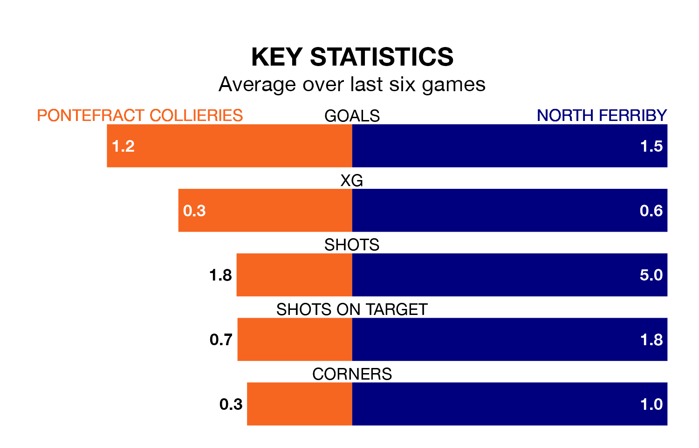

Pontefract Collieries host North Ferriby on Saturday in the Northern Premier League Division One East.
In their last league match, on March 9, Pontefract Collieries beat Bridlington Town 3-0 at home.
North Ferriby lost, 1-0 at home against Dunston UTS on March 2.
With 48 goals in 27 games so far this season, Pontefract Collieries are scoring more than average in the league with 1.8 goals per game. And they are conceding fewer than average, letting in 32 goals at a rate of 1.2 per game.
North Ferriby are also above average scorers, with 1.6 goals per game, compared to a league average of 1.5. They have conceded 1.8 goals per game.
The home team are sixth in the table after 27 games, of which they have won 13 and drawn eight, earning 47 points.
The visitors are three places behind Pontefract Collieries in ninth, with 13 wins and three draws putting them on 42 points.
Pontefract Collieries are in mixed form in the Northern Premier League Division One East, with two wins and three draws from their last six games.
With three wins and a draw over that period, North Ferriby's form is slightly better – they have taken 10 points from 18, compared to the hosts' nine.
Updated: 15:10 (UTC), 15/03/24